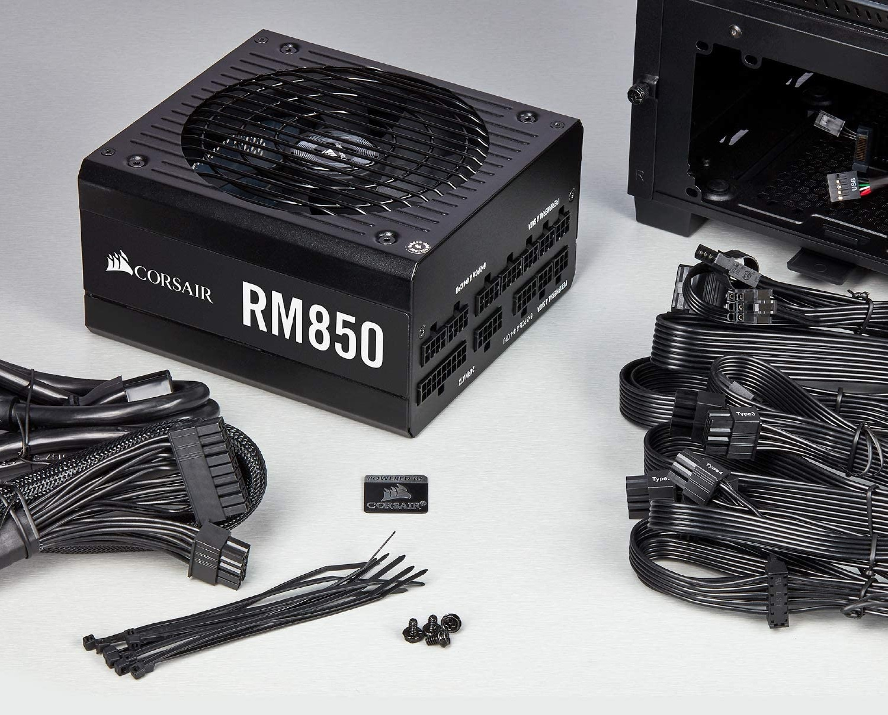

Zdroje
je v informatice zařízení sloužící ke transformaci nízkého napětí (ze zásuvky, tj. 110 až 240 voltů) na malé napětí používané uvnitř počítače (3,3 až 12 V).
V roce 2022 je nejrozšířenějším standardem pro stolní počítače typ ATX (nebo jejich zmenšené varianty TFX, SFX) a jsou vyráběny pro různý elektrický výkon (např. 350 wattů, 400, 450, … 700 W i více). Nejnovější verze standardu ATX je 2.31 (z poloviny r. 2008). Dále zdroje mohou být modulární a semi-modulární. Modulární znamená že kabely které vedou ze zdroje lze odpojit nebo připojit dle potřeby. Semi-modulární zdroj obsahuje napevno přidělané 24 pin pro napájení základní desky a 4 nebo 8 pin pro napájení procesoru. SATA, Molex a 6 pin na grafiku lze odpojit nebo připojit jako u modulární zdroje.
Notebooky mají obvykle nestandardní napájecí zdroje (různá výstupní napětí i výkon). Přenosná zařízení (chytrý telefon, tablet) využívají standardní 5 V zdroje s konektorem pro USB kabel, které se v roce 2022 odlišují různými standardy pro rychlé nabíjení (Quick Charge, Fast charge, USB-PD a podobně).

Technické informace
Pohotovostní režim
ATX zdroje jsou typicky trvale připojeny do elektrické sítě, ze které odebírají malý proud (tzv. pohotovostního režim). Zdroj trvale udržuje napětí 5 V (Standby) s malým výkonem na fialovém vodiči v P1 konektoru (+5VSB), který je zapojen do základní desky. Pomocí tohoto trvalého napájení jsou udržovány v provozu malé části obvodů na základní desce (napájení zapínacího tlačítka, napájení některých externích zařízení, například klávesnice atp.). Teprve po přivedení napětí (signálu) na zelený vodič P1 konektoru (PS_ON) je uveden napájecí zdroj do provozního stavu, což je signalizováno šedivým vodičem (Power good, PWR_OK).
Power rating
Napájecí zdroje jsou rozděleny podle maximálního výkonu. Typické výkonové rozsahy pro domácí a kancelářské aplikace jsou v rozmezí od 300 W do 500 W (pro miniaturní a starší počítače i pod 300 W). Napájecí zdroje používané v počítačích pro hráče, servery a těžaře kryptoměn mají výkon vyšší (500 W až 1800 W), protože napájejí výkonné grafické karty nebo více mikroprocesorů na základní desce.
Konektory
- Hlavní napájecí konektor - slouží pro přípojení napájení k základní desce. Mívá 20 nebo 24 pinů.
- ATX12V - je 4pinový napájecí konektor (někdy nazývaný P4), druhý, který je pro připojení k základní desce (kromě hlavního 24pinového), poskytuje zvláštní napájení pro procesor.
- 4pinový periferní Molex - je klasický konektor pro napájení starších pevných disků v počítači.
- 4pinový Berg - je malý napájecí konektor pro 3,5″ disketové jednotky. V některých případech může být použit jako pomocný konektor pro starší grafické karty AGP.
- Pomocné napájecí konektory
- SATA Power - 15pinový konektor pro komponenty, které používají SATA napájecí zásuvky. Tento konektor dodává napětí ve třech různých hodnotách: +3,3, +5 a +12 voltů.
- 6pinový - moderní počítače dodávají energii pomocí 6pinových konektorů, které obvykle využívají grafické karty PCI Express. Každý tento konektor může poskytovat maximálně 75 W.
- 6+2 piny - rro účely zpětné kompatibility jsou některé PCI grafické karty Express určeny pro tento druh pinové konfigurace
Zařízení připojené k zdroji
- Základní deska
- Pevné disky
- Mechaniky (optické (CD-ROM, DVD), páskové, magnetické (ZIP disk, JAZ, FDD), magnetooptické a další)
- Aktivní chladiče
- Grafická karta
- Další zařízení (např. mechaniky pro externí HDD, některé speciální moduly, kontrolky, podsvícení aj.)
Notebooky
Většina přenosných počítačů má zdroje, které poskytují na výstupu výkon od 25 do 100 W.Herní notebooky mohou mít až 300 W Obvykle to jsou zdroje externí, které konvertují AC napětí na jedno stejnosměrné (nejčastěji 19 V), DC-DC konverze dále dochází v NTB, aby poskytl různá stejnosměrná napětí požadovaný různými složkami počítače.